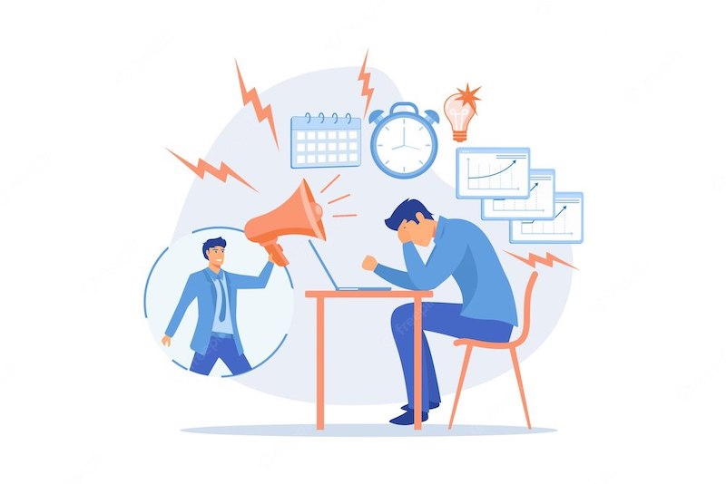
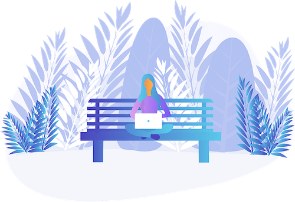

Самопомощь при стрессе
Мозг программиста часто напряжён, из-за этого ослабевает защитная функция организма и повышается риск выгорания.
Симптомы стресса
- Сложность проснуться утром, несмотря на достаточное количество часов сна;
- Постоянная усталость, не зависящая ото сна (хотя сон может быть нарушен);
- Недостаток энергии, особенно, по утрам до 10:00 и во второй половине, дня между 15 и 16. Временное улучшение после 18 и ужина.Частая усталость между 21 и 22, но часто с тенденцией сопротивления, пойти и лечь в постель;
- Боязнь холода (но может быть также и повышенная чувствительность к жаре);
- Пониженная температура тела;
- Сильное желание соли или соленой пищи, сладких продуктов, жиров и белков;
- Нервозность, раздражительность, снижение толерантности, другие кажутся более раздражающими, чем обычно;
- Легкая депрессия, апатия, неспособность наслаждаться радостями жизни;

Причины стресса
Общий стресс может быть вызван всем, что истощает организм:
- Эмоциональное выгорание
- Острые инфекции, между которыми было немного времени на восстановление или затяжные хронические инфекции
- Посттравматические и постоперационные периоды
- Дефицит отдыха, либо некачественно организованный отдых, не обеспечивающий психоэмоциональную разгрузку
- Прием КОК
- Хроническая интоксикация или повышенная токсическая нагрузка на рабочем месте
Хронический:
- Длительное психоэмоциональное напряжение (как негативное, так и положительное)
- Жёсткое ограничение в питании (низкокалорийные диеты), исключение полезных жиров и т.д.
- Гиподинамия, интенсивные тренировки и спорт
- Изнурительная физическая и умственная работа без отдыха/восстановления и поощрения
- Работа в ночную смену, отсутствие регулярного сна, частая смена часовых поясов
Образ жизни при стрессе
- Медитации
- Дыхательные практики
- Арт-терапия, цветотерапия
- Планирование
- Дневник благодарности
- Ограничение потока информации
- Ресурсные практики (подбираются индивидуально для человека, зависят от его интересов, хобби)
- Водные расслабляющие процедуры (ванна с солью Эпсом, с эфирным маслом лаванды, хамам, баня или сауна без высоких температур)
Нутрицевтики и рацион при стрессе:
Тулси (базилик священный) в два приема: 2 капсулы за 3-4 часа до сна, 2 капсулы за 1 час до сна, курс 2-4 недели.
Магний по 400 мг в один или два приема, курс 1-2 месяца. Исключить кофеиносодержащие напитки - матэ, кофе, черный чай, энергетики. Питайтесь полноценно, ограничив простые углеводы (сахар, фруктовые соки, хлебобулочные изделия, магазинные соусы, паста). Ешьте крупы, крахмалистые овощи.
Прием пищи 3 раза в день (плюс 1 перекус по потребности)
Скорая помощь при остром стрессе
- Горячая вода – ванночка для ног или душ (с головой). Если нет возможности – набрать воду в раковине и опустить туда руки + умыться
- Холодная вода - для лица
- Дыхательные упражнения (удлиненный выдох - вдох короче выдоха, например, 4 счета вдох, 6-8 выдох)
- Горячий травяной чай с медом
- Ревизия предметов, находящихся в комнате (письменно)
- Физическая нагрузка для снятия эмоционального напряжения (планка)
- Эфирные масла (лаванда, вербена) - воздействуют напрямую на часть нервной системы, отвечающей за расслабление. Миниингаляции - вдыхать при стрессе несколько раз из флакон
